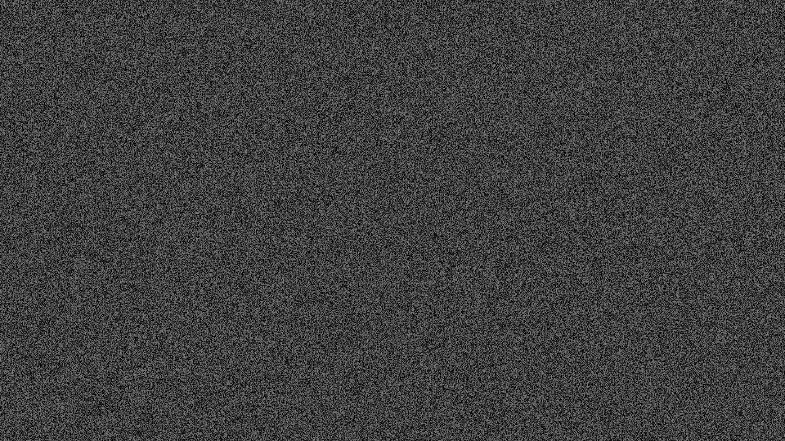

合成内容，无外部资源、账号或提交动作。需记录源应用复制→历史可见→恢复→目标实际接收，不能只检查事件发送。
LOCALCLIP-TEST-A LOCALCLIP-TEST-B LOCALCLIP-TEST-C 今天整理需求，明天处理代码。 let foo_bar = 50%; a->b; "value" 'quote' path\test 保留缩进与换行 https://example.invalid/path?a=1&b=2#section
今天整理需求，明天处理代码。
合成链接
第二行文字。
链接地址为fixture；验收过程中不打开网络链接。
同目录sample.png/sample.tiff/sample.jpg来自固定fixture SQLite的实际编码字节；哈希、1920×1080尺寸和类型见manifest.json。浏览器不承诺TIFF显示，使用TextEdit/Pages图片接收矩阵。
